Task 4. Modeling a business process with a start form and dependent form components
- 1. Goal
- 2. Prerequisites
- 3. Task steps
- 3.1. Modeling the business process
- 3.1.1. Business process modeling stages
- 3.1.2. Creating a pool for the business process
- 3.1.3. Creating a start event
- 3.1.4. Create a script task to prepare variables for records
- 3.1.5. Creating a service task to search lab data
- 3.1.6. Creating a script task to prepare document data for display (transient var)
- 3.1.7. Creating an error handling event
- 3.1.8. Creating a user task to add personnel data
- 3.1.9. Creating a user task to sign data with an electronic signature
- 3.1.10. Creating a script task to prepare data for saving (transient var)
- 3.1.11. Creating a service task to save data to the data factory
- 3.1.12. Creating a service task to set the business process result
- 3.1.13. Creating an end event
- 3.2. Modeling forms
- 3.3. Modeling business process access
- 3.1. Modeling the business process
- 4. Uploading the regulations files to a remote Gerrit repository
1. Goal
- The goal of this task is to learn how to:
-
-
Model a business process with a start form.
-
Model forms with dependent components and an Edit Grid component.
-
2. Prerequisites
Before you start working on the task, complete these prerequisite steps:
3. Task steps
3.1. Modeling the business process
|
At the business process modeling stage, you need to create and save the corresponding BPMN diagram. Download the add-personnel.bpmn file with a sample business process schema to use as an example. |
3.1.1. Business process modeling stages
Use the following checklist to track the steps of the modeling process.
| After completing all the steps, be sure to save the business process schema you modeled to the appropriate folder with the registry regulations. |
3.1.2. Creating a pool for the business process
To model a pool for your business process, perform the following steps:
-
Open the Camunda Modeler app and create a new BPMN diagram. To do this, open the menu in the upper left corner and click File > New File > BPMN Diagram.
-
In the toolbar on the left, find the Create pool/Participant item and drag it to the modeling panel. Fill out the following fields in the General tab:
-
Name: Enter the task’s name — for example,
Add personnel data. -
Process Id: Enter the process ID — for example,
add-personnel. -
Process Name: Enter the process name — for example,
Add personnel data.
-
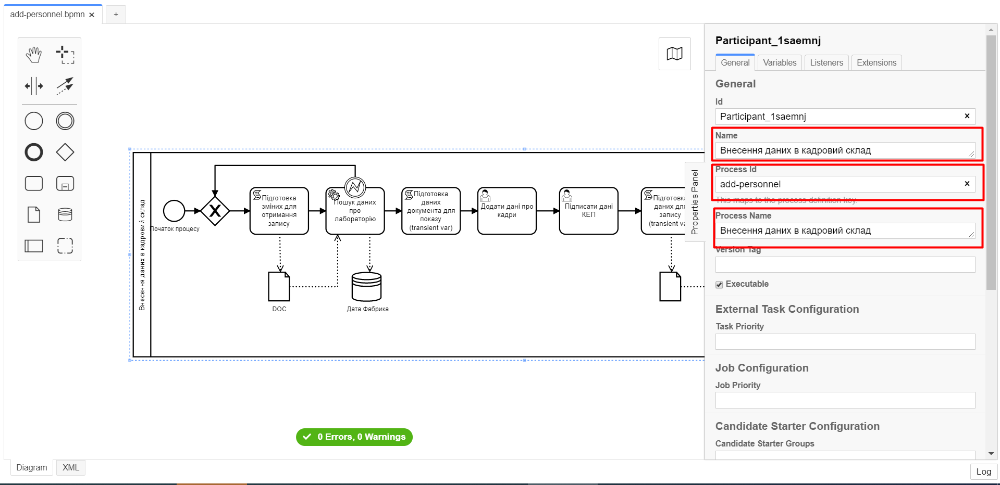
3.1.3. Creating a start event
To create a start event, perform the following steps:
-
In the toolbar on the left, find the CreateStartEvent item (a circle) and drag it to the modeling panel.
-
In the properties panel on the right, fill out the following parameters in the General tab:
-
Id: Enter event ID — for example,
start_event. -
Name: Enter the event’s name — for example,
Start process. -
Initiator: Enter
initiator. This variable will contain information about the user who started the business process.
-
-
In the Forms tab > Form key field, enter
shared-search-lab:
3.1.4. Create a script task to prepare variables for records
Fill out the following fields:
-
Id:
extractLabIdFromFormActivity -
Name:
Prepare variables for records -
Script Format:
groovy -
Script Type:
InlineScript -
Result Variable:
laboratoryId
Script
submission('start_event').formData.prop('laboratory').prop('laboratoryId').value()
3.1.5. Creating a service task to search lab data
To create a service task to search lab data, perform the following steps:
-
Set the task type by clicking the wrench icon and selecting Service Task from the menu.
-
Click
Open Catalog, select the Read entity from data factory template, and clickApply. -
Fill out the following fields:
-
Id: Enter
searchLabInDataFactoryActivity. -
Name: Enter the task’s name — for example,
Search lab data. -
Resource: Enter
laboratory. -
Resource id: Enter
${laboratoryId}. -
X-Access-Token: Enter
${initiator().accessToken}.After the first user task, it is preferable to use the
completer('<task_id>')function to get user data instead ofinitiator().The access token is taken either from the initiator (for example,
$initiator().accessToken}) or the completer of the last user task (for example,${completer('taskDefinitionId').accessToken}).The JWT token has a validity period of 300 seconds. If you specify the token of the initiator of the business process, and the user takes a long time to do the task, then the token will expire, and the business process must be restarted.
For details on the JUEL functions, see JUEL functions in business processes.
-
Result Variable: Enter
labResponse.
-
3.1.6. Creating a script task to prepare document data for display (transient var)
Fill out the following fields:
-
Id:
extractAddPersonnelFormPrepopulationActivity -
Name:
Prepare document data for display (transient var) -
Script Format:
groovy -
Script Type:
InlineScript
Script
var name = labResponse.responseBody.prop('name').value()
var edrpou = labResponse.responseBody.prop('edrpou').value()
var cephData = ['edrpou':edrpou,'name':name]
execution.removeVariable('payload')
set_transient_variable('payload', S(cephData, 'application/json'))
3.1.7. Creating an error handling event
-
Drag the Intermediate/Boundary event item from the toolbar on the left and add it to the "Search lab data" service task.
-
Click the wrench icon and select the Error Boundary Event type from the menu.
-
Create a Gateway that will act as a checkpoint for redirecting in case of an error.
-
Add error handling logic by connecting the Error Boundary Event and the XOR Gateway. This way, if an error occurs at the "Search lab data" stage, the user will automatically return to the checkpoint, from where the process will start again.
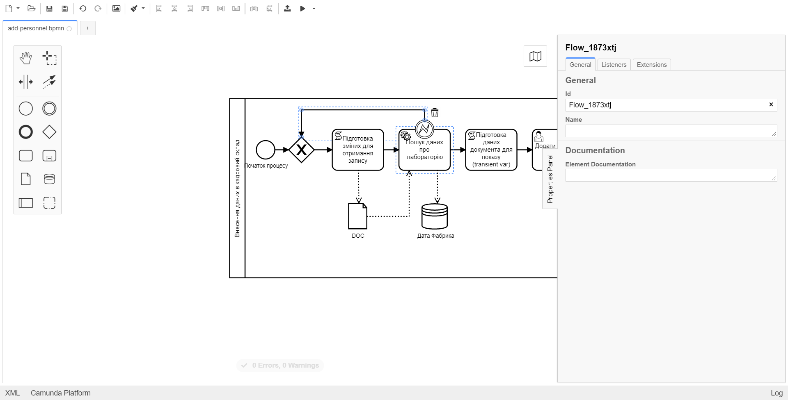
|
The |
3.1.8. Creating a user task to add personnel data
-
Set the task type by clicking the wrench icon and selecting User Task from the menu.
-
Click
Open Catalog, select the User Form template, and clickApply. -
Fill out the following fields:
-
Id:
addPersonnelFormActivity -
Name:
Add personnel data -
Form key:
add-personnel-bp-add-personnel -
Assignee:
${initiator} -
Form data pre-population:
${payload}
-

3.1.9. Creating a user task to sign data with an electronic signature
-
Set the task type by clicking the wrench icon and selecting User Task from the menu.
-
Click
Open Catalog, select the Officer Sign Task template, and clickApply. -
Fill out the following fields:
-
Id:
signPersonnelFormActivity -
Name:
Sign data with QES -
Form key:
add-personnel-bp-sign-personnel -
Assignee:
${initiator} -
Form data pre-population:
${submission('addPersonnelFormActivity').formData}
-

3.1.10. Creating a script task to prepare data for saving (transient var)
Fill out the following fields:
-
Id:
convertSignFormDataToDataFactoryFormatActivity -
Name:
Prepare data for saving (transient var) -
Script Format:
groovy -
Script Type:
InlineScript
Script
def personnelGrid = submission('signPersonnelFormActivity').formData.prop('personnelGrid').elements()
for (var personnel : personnelGrid) {
personnel.prop("laboratoryId", laboratoryId)
personnel.prop("staffStatusId", personnel.prop("staffStatus").prop("staffStatusId").value())
personnel.deleteProp("staffStatus")
if (personnel.hasProp('hygienistCertificateFile') && !personnel.prop('hygienistCertificateFile').elements().isEmpty()) {
def hygienistCertificateFile = personnel.prop('hygienistCertificateFile').elements().first()
} else {
personnel.prop('hygienistCertificateFile', null as String)
}
if (personnel.hasProp('ordersFile') && !personnel.prop('ordersFile').elements().isEmpty()) {
def ordersFile = personnel.prop('ordersFile').elements().first()
personnel.prop('ordersFile', ordersFile)
} else {
personnel.prop('ordersFile', null as String)
}
if (personnel.hasProp('hireStaffFile') && !personnel.prop('hireStaffFile').elements().isEmpty()) {
def hireStaffFile = personnel.prop('hireStaffFile').elements().first()
} else {
personnel.prop('hireStaffFile', null as String)
}
}
execution.removeVariable('dataPayload')
set_transient_variable('dataPayload', S(personnelGrid.toString()))
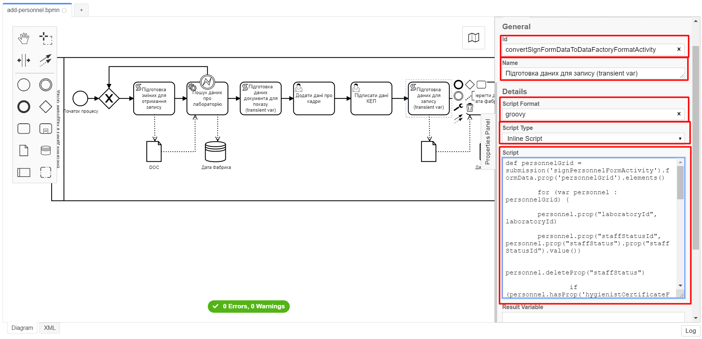
3.1.11. Creating a service task to save data to the data factory
-
Create a new service task by clicking the wrench icon and selecting Service Task from the menu.
-
Click
Open Catalog, select the Batch creation of entities in data factory template, and clickApply. -
Fill out the following fields:
-
Id:
createStaffInDataFactoryActivity -
Name:
Save data to data factory -
Resource:
staff -
Payload:
${dataPayload} -
X-Access-Token:
${completer('signPersonnelFormActivity').accessToken}After the first user task, it is preferable to use the
completer('<task_id>')function to get user data instead ofinitiator().The access token is taken either from the initiator (for example,
$initiator().accessToken}) or the completer of the last user task (for example,${completer('taskDefinitionId').accessToken}).The JWT token has a validity period of 300 seconds. If you specify the token of the initiator of the business process, and the user takes a long time to do the task, then the token will expire, and the business process must be restarted.
For details on the JUEL functions, see JUEL functions in business processes.
-
X-Digital-Signature source:
${sign_submission('signPersonnelFormActivity').signatureDocumentId} -
Result Variable:
response
-
3.1.12. Creating a service task to set the business process result
-
Create a new service task by clicking the wrench icon and selecting Service Task from the menu.
-
Click
Open Catalog, select the Define business process status template, and clickApply. -
Fill out the following fields:
-
Id:
defineBusinessProcessStatusActivity -
Name:
"Personnel data added" execution result -
Status:
Personnel data added
-
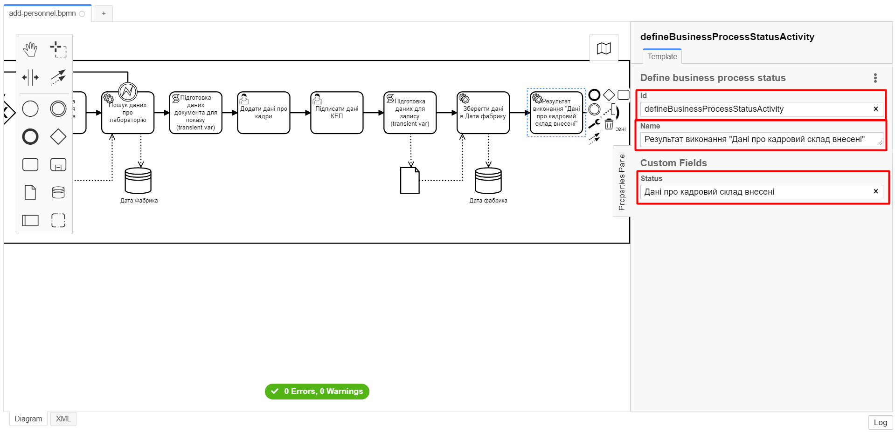
3.2. Modeling forms
|
During the forms modeling stage, you need to create and connect JSON forms to the business process tasks you modeled previously. The forms are connected to business processes using the service name. Use the add-personnel-bp-add-personnel.json, add-personnel-bp-sign-personnel.json, and shared-search-lab.json sample files with form examples. |
3.2.1. Creating a form to search lab data
|
We recommend using the Google Chrome browser for this task. |
First, you need to create a form where users can enter data. Perform the following steps:
-
Sign in to the regulations administrator portal.

-
By default, the portal opens the master version of the regulations, displaying the forms that were already deployed. At this point, it will be empty.
In the master version, forms are available in read-only mode and cannot be edited.
To add and edit forms, you need to create a version candidate by selecting the
Create new requestitem from the menu in the upper left corner.
-
In the Create new request window, fill out the following fields:
-
Version name: Enter
task-4. -
Version description: Enter
Creating forms for task 4.Click the
Createbutton.After you create a request, the portal automatically redirects you to the version candidate, where you can add and edit forms.
-
-
Go to the UI forms section. To create a new form for the business process, click the
Create new formbutton.
-
In the dialog window, fill out the following fields:
-
Form’s business name: Enter the name of the appropriate user task —
Search lab data. -
Form’s service name: Enter
shared-search-lab.
-
-
Go to the Build tab.
We recommend using the components from the Updated section.
-
From the panel on the left, drag the Text Field component onto the modeling canvas and configure the following parameters:
-
In the Display tab > Label field, enter
EDRPOU: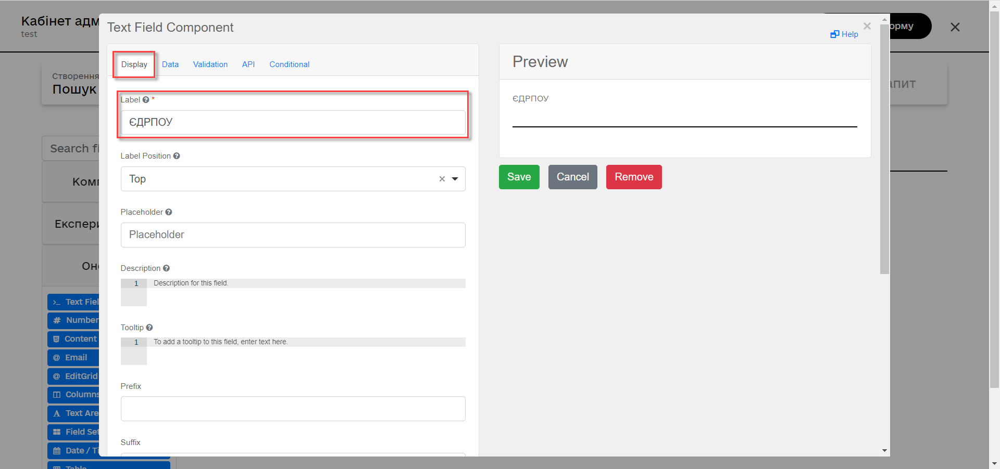
-
In the API tab > Property Name field, enter
edrpou.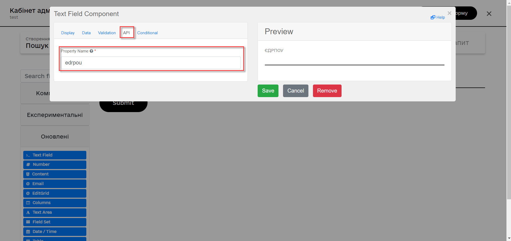
By default, the value of the Property Name field is identical to the Label field. Unlike the Label field, the Property Name field can only contain Latin letters.
-
In the Validation tab, select the Required checkbox to make the field mandatory. Click
Saveto save your changes.
-
-
From the panel on the left, drag the Select component onto the modeling canvas and configure the following parameters:
-
In the Display tab > Label field, enter
Lab name: -
In the Data tab > Data Source Type field, select
URL.-
In the Data Source URL field, enter the following value:
/api/data-factory/laboratory-start-with-edrpou-contains-name
This is a reference to the previously created endpoint of the
laboratory_start_with_edrpou_contains_namesearch condition in the data model. -
Select the Lazy Load Data checkbox so that the valid values for the current Select component are updated each time it is accessed.
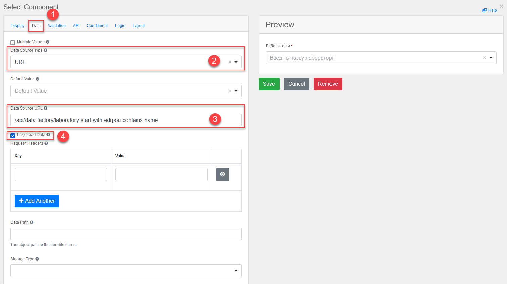
-
In the Value Property field, enter
laboratoryId. -
In the Filter Query field, enter
edrpou={{data.edrpou}}. -
In the Limit field, enter
100. This limits the search to the first 100 results. When used correctly, restrictions like this will help reduce the load on the registry systems. -
In the Item Template field, enter
<span>{{ item.name }}</span>.The
{{ item.name }}value contains the following:-
item: The current object from the list of found laboratories. -
name: The object’s name.
In this field, you specify what will be shown in the select query. In other words, the
/api/data-factory/laboratory-start-with-edrpou-contains-nameendpoint will return an array of founditemobjects in the following format:{ "laboratoryId": "466ad903-7bd0-4078-9f80-972ed66780a8", "edrpou": "12345678", "name": "Lab Name" }To display laboratory names in the dropdown list of the select query, specify the
namefield:(<span>{{ item.name }}</span>).Similarly, if you need to display the
edrpoucode of each laboratory in the dropdown list, indicate theedrpoufield:{{ item.edrpou }}. -
-
In the Refresh Options On field, select
EDRPOU. This makes the select request dependent on the precedingEDRPOUfield and will reset the previously selected value when the value specified in theEDRPOUfield changes.For details on the Refresh Options On function, see Using the "Refresh Options On" function in the updated Select component.
-
-
In the Validation tab, select the Required checkbox to make the field mandatory.
-
In the API tab > Property Name field, enter
laboratory. ClickSaveto save your changes.
-
3.2.2. Modeling uniform entities on the forms using Edit Grid
3.2.2.1. Creating a form to enter data about new personnel
-
Go to the UI forms section. To create a new form for the business process, click the
Create new formbutton. -
In the dialog window, fill out the following fields:
-
Form’s business name: Enter the name of the appropriate user task —
Add personnel data. -
Form’s service name: Enter
add-personnel-bp-add-personnel.
-
-
Go to the Build tab.
We recommend using the components from the Updated section.
Using Edit Grid, you can add and edit uniform data on your forms.
-
From the panel on the left, drag the Edit Grid component onto the modeling canvas and configure the following parameters:
-
In the Display tab > Label field, enter
Add personnel data: -
In the Templates tab, fill out the following fields:
-
Add Another Text:
Add -
Save Row Text:
Add record -
Remove Row Text:
Delete record
-
-
In the API tab > Property Name field, enter
personnelGrid.
-
-
Click
Saveto save your changes.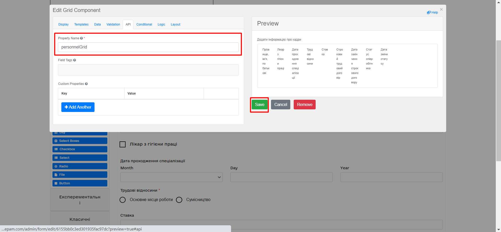
-
Add components to Edit Grid.
-
From the panel on the left, drag the Text Field component onto the Edit Grid field and configure the following parameters:
-
In the Display tab > Label field, enter
Full name: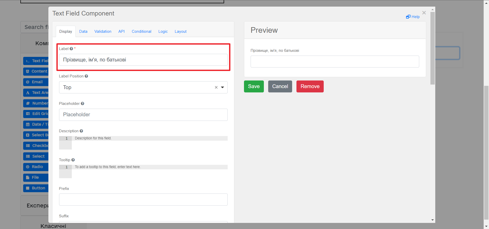
-
In the API tab > Property Name field, enter
fullName. -
Click
Saveto save your changes.
-
-
From the panel on the left, drag the Checkbox component onto the Edit Grid field and configure the following parameters:
-
In the Display tab > Label field, enter
Occupational hygienist: -
In the API tab > Property Name field, enter
hygienistFlag. -
Click
Saveto save your changes.
-
-
3.2.2.2. Configuring the display of one component based on the value of another component
-
From the panel on the left, drag the Date/Time component onto the Edit Grid field and configure the following parameters to retrieve information from the directory:
-
In the Display tab > Label field, enter
Date of specialization completion. -
In the Format field, enter
yyyy-MM-dd:: -
In the Time tab, clear the Enable Time Input checkbox — we don’t need it for the current task.
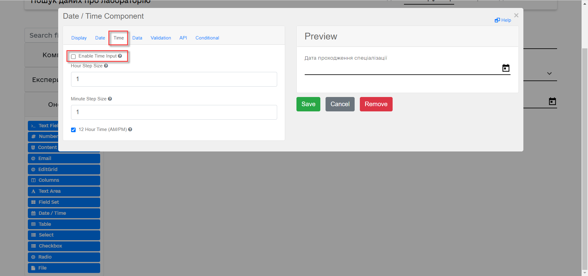
-
In the API tab > Property Name field, enter
specializationDate.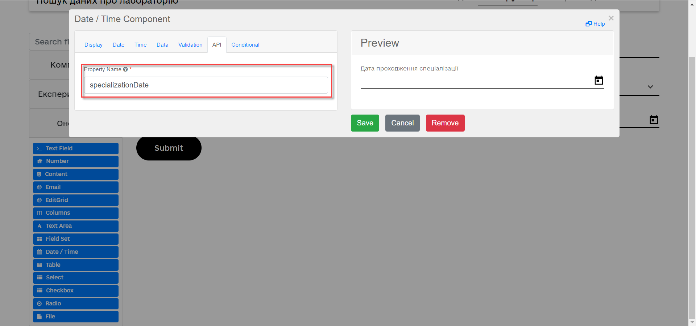
-
In the Conditional tab, fill out the following fields:
-
This component should Display:
True -
When the form component:
Occupational hygienist (personnel.Grid.hygienistFlag) -
Has the value:
trueThis way, the component will be displayed only when the
Occupational hygienist (personnel.Grid.hygienistFlag)component istrue.
-
-
Click
Saveto save your changes.
-
-
Drag and configure the following additional components to the form:
-
Radio component:
-
Display tab > Label field:
Employment type -
Data tab > Values > Label field:
Full-time; Value field:true -
Data tab > Values > Label field:
Part-time; Value field:false -
API tab > Property Name field:
fullTimeFlag
-
-
Number component:
-
Display tab > Label field:
Salary -
Validation tab > Minimum value field:
1 -
API tab > Property Name field:
salary
-
-
Day component:
-
Display tab > Label field:
Date of status change -
API tab > Property Name field:
dismissalDate
-
-
-
From the panel on the left, drag the Select component onto the Edit Grid field and configure the following parameters to retrieve information from the directory:
-
In the Display tab > Label field, enter
Employee status. -
In the Data tab, fill out the following fields:
-
Data Source Type:
URL -
Data Source URL:
/api/data-factory/staff-contains-name, where:-
/api/data-factory/is the data factory path -
staff-contains-nameis the name of the search condition to retrieve data from the domain directory that was modeled and added to the repository
-
-
Value Property:
staffStatusId -
Item Template:
<span>{{ item.name }}</span>, wherenameis the name of the parameter that returns the search condition and will be displayed on the form: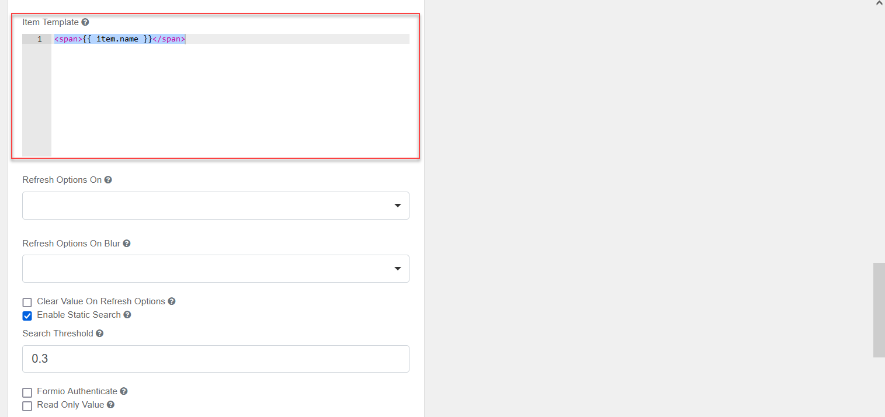
-
-
In the API tab > Property Name field, enter
staffStatus. -
Click
Saveto save your changes.
-
-
From the panel on the left, drag the Checkbox component onto the Edit Grid field and configure the following parameters:
-
In the Display tab > Label field, enter
Fixed-term employment contract. -
In the API tab > Property Name field, enter
fixedTermContractFlag. -
Click
Saveto save your changes.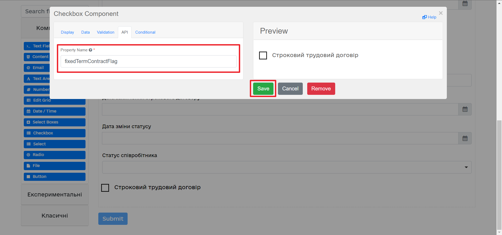
-
-
From the panel on the left, drag the Day component onto the Edit Grid field and configure the following parameters:
-
In the Display tab > Label field, enter
Contract end date.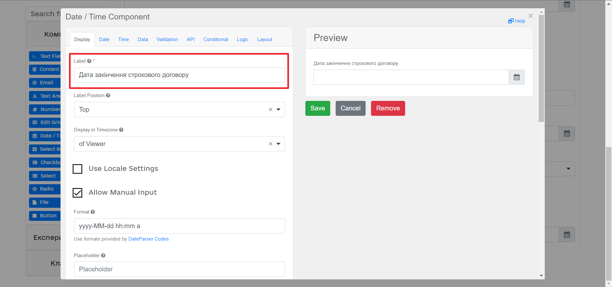
-
In the API tab > Property Name field, enter
contractEndDate. -
In the Conditional tab, fill out the following fields:
-
This component should Display:
True -
When the form component:
Fixed-term employment contract (personnelGrid.fixedTermContractFlag) -
Has the value:
trueThis way, the component will be displayed only when the
Fixed-term employment contract (personnelGrid.fixedTermContractFlag)component istrue.
-
-
Click
Saveto save your changes.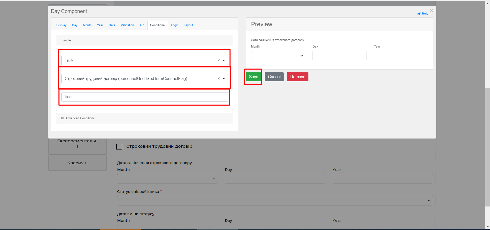
-
-
From the panel on the left, drag the Text Field components outside the Edit Grid field and configure the following parameters:
-
For the first Text Field component:
-
In the Display tab:
-
In the Label field, enter
Full name of the lab or sole proprietor. -
Set the Disabled checkbox to
true.
-
-
In the API tab > Property Name field, enter
name.
-
-
For the second Text Field component:
-
In the Display tab:
-
In the Label field, enter
EDRPOU or RNOKPP code. -
Set the Disabled checkbox to
true.
-
-
In the API tab > Property Name field, enter
edrpou.
-
-
These fields will contain data from the business process.
-
-
Save your form by clicking the
Create formbutton in the upper right corner.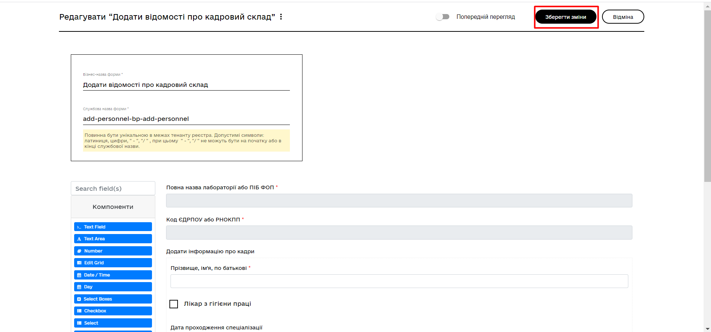
To display fields as columns inside the Edit Grid component, open the field’s settings and select the Table View checkbox in the Display tab. When this checkbox is selected, the field is displayed in a separate column.
3.2.3. Creating a form to sign data
After you create a form to enter data, create one more form to sign data.
Copy the form you modeled previously using the copy icon — this way, you can create a form from a template.
Configure the form’s parameters:
-
Form’s business name: Enter the name of the user task —
Sign personnel data. -
Form’s service name: Enter
add-personnel-bp-sign-personnel. -
For all components:
-
In the Display tab, select the Disabled checkbox.
-
Click
Saveto save your changes.
-
3.2.4. Saving the business process forms
-
Save your form by clicking the
Create formbutton in the upper right corner. -
Download your forms by clicking the download icon.
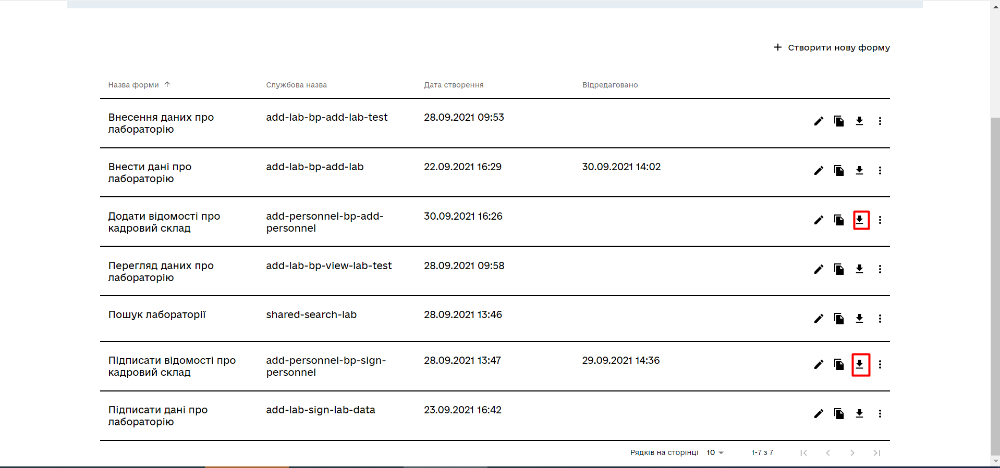
-
Copy them to the forms regulations folder of your project in the local Gerrit repository.
3.3. Modeling business process access
|
At this stage, you need to grant access to the business process from the officer portal for the standard Access parameters are configured via the officer.yml file from the bp-auth folder. |
Edit the bp-auth/officer.yml file by adding the following parameters:
authorization:
realm: 'officer'
process_definitions:
- process_definition_id: 'add-lab-test'
process_name: 'Creating a laboratory'
process_description: 'Laboratory creation regulations'
roles:
- officer
- process_definition_id: 'add-lab'
process_name: 'Creating a laboratory'
process_description: 'Laboratory creation regulations'
roles:
- officer
- process_definition_id: 'add-personnel'
process_name: 'Entering personnel data'
process_description: 'Entering personnel data'
roles:
- officer3.3.1. Saving the access config file
Save the officer.yml file to the bp-auth regulations folder of your project in the local Gerrit repository.
4. Uploading the regulations files to a remote Gerrit repository
To successfully deploy the business process with forms and apply the correct access settings in the target environment, the regulations administrator must upload the locally stored registry regulations files to the remote Gerrit code repository.
To do this, perform the steps described in the following topic: Deploying registry regulations in Gerrit.